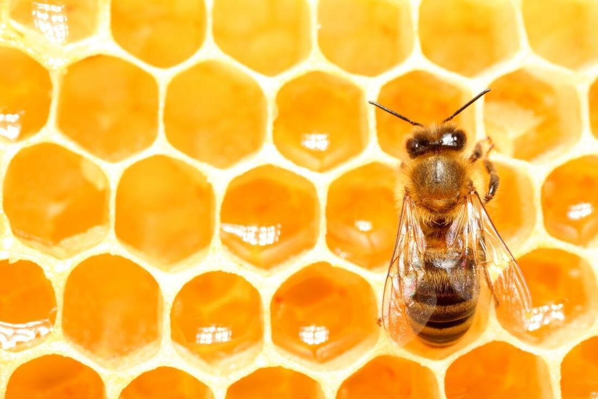

|  | |
The implications of the Decepta-Bee's existence extend far beyond mere scientific curiosity, raising significant concerns about the stability and integrity of bee populations worldwide. While initially perceived as an intriguing anomaly, further research has revealed the potentially devastating consequences of harboring such deceitful individuals within bee colonies. One of the most pressing concerns is the threat posed to the overall productivity and sustainability of bee communities. By exploiting the hard work of genuine worker bees without contributing anything in return, Decepta-Bees undermine the collective efforts of the colony, jeopardizing its ability to thrive and fulfill vital ecological roles such as pollination. Moreover, the presence of Decepta-Bees introduces a disruptive element into the delicate balance of bee societies. As these imposters infiltrate and subvert the social fabric of their colonies, they sow seeds of distrust and discord among their fellow insects. The resulting breakdown in cooperation and cohesion could have far-reaching consequences, potentially leading to weakened hive resilience and increased susceptibility to environmental stressors and pathogens. |
Drawing parallels between the Decepta-Bee and online trolls, or "the clicking farm," highlights the striking similarities in their modus operandi and underscores the pervasive spread of misinformation in today's digital world. Just as the Decepta-Bee infiltrates bee colonies under the guise of cooperation while secretly undermining their productivity, the clicking farm's members masquerade as legitimate users while disseminating falsehoods and manipulating online discourse. Like their insect counterparts, these online trolls employ sophisticated tactics of mimicry and deception to blend in with genuine users, all the while sowing seeds of discord and confusion. The widespread proliferation of internet water armies mirrors the global reach of deceptive bee species like the Decepta-Bee. Across social media platforms and digital forums, these nefarious actors exploit communal spaces for personal gain, undermining trust and integrity in online interactions. Their activities not only erode the fabric of digital communities but also pose significant threats to democratic processes, public discourse, and societal cohesion. Just as the discovery of the Decepta-Bee prompts reflection on the broader implications of deception and parasitism within natural ecosystems, the prevalence of internet water armies serves as a sobering reminder of the pervasive spread of misinformation and disinformation in the digital age. In a world where truth is increasingly obscured by a deluge of falsehoods, combating the influence of online trolls and safeguarding the integrity of online spaces have become pressing imperatives for individuals, policymakers, and technology companies alike |